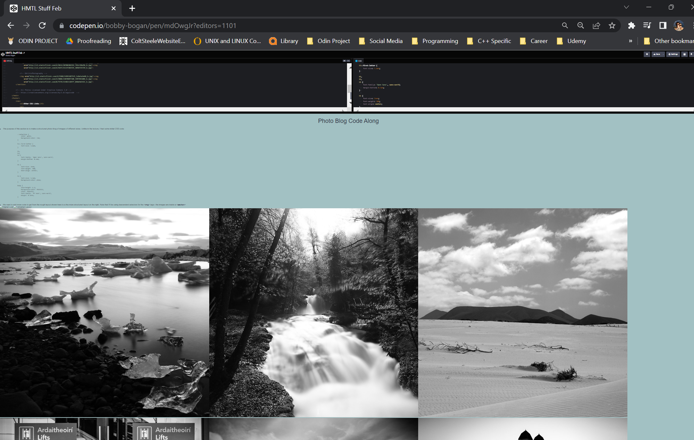
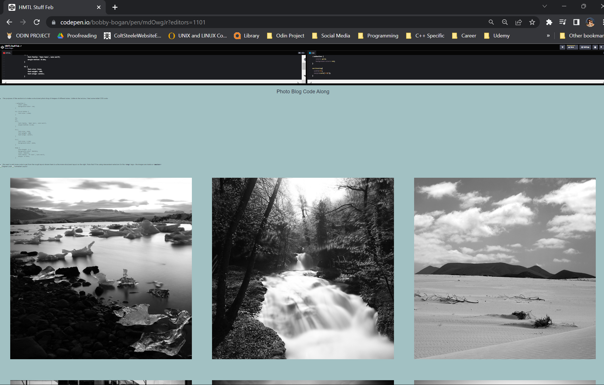

The purpose of this section is to make a structured photo blog of images of different sizes. For simplicity,
my width in the body is different from other areas of the site. Unlike in the
lecture, I had some initial CSS code:
::selection {
color: gold;
background-color: red;
}
h3::first-letter {
font-size: 1.6em;
}
h1,
h2,
h3 {
font-family: 'Open Sans', sans-serif;
margin-bottom: 0.5em;
}
h1 {
font-size: 3rem;
font-weight: 100;
text-align: center;
}
h3 {
font-size: 1.5em;
background-color: plum;
}
body {
line-height: 1.2;
background-color: #A2C1C3;
color: #2b2d42;
font-family: 'PT Sans', sans-serif;
margin: 0 auto;
}
We want to add more code to get from the rough layout shown here to a the more structured layout on the
right. Note that I'll be using descendent selectors for the <img> tags - the images
are inside a
<section>

 Using this simple code results in a much more structured layout!
Using this simple code results in a much more structured layout!
section>img{
width:30%;
}

However, the above is not ideal! We have about 10% on the right-hand side. Hard-coding in some absolute
value, such as "margin:20px;" is a bad idea! It doesn't scale very well. Instead, we make use of a
calculation function to divide our 10% remainder. Because margin is located on the left AND right of an
individual element, we need to calculate a percentage of 10/6 to get the desired 3*3 grid
of equally-sized
photos. There are multiple advantages to this approach: the images shrink in sync with the screen size.
Rather than use 1.66666666%, we can pass in our values using calc(). See below:
section>img{
width:30%;
margin:calc(10%/6);
}

As an aside, some classes are attached to the images above too.
.center{
display: block;
margin:auto;
width: 80%;
}
.example{
width:45%;
margin:calc(10%/4);
}